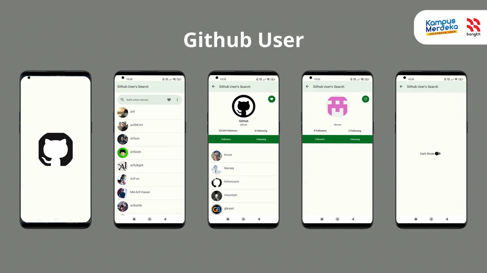

Category : Android (Kotlin)
Project Date : September 2023
Github User is an Android apps that uses the Github API to got the data and implement it by using Retrofit. This application have feature to search the github users, view their profiles, and assign them to favorites whose the data is stored in local storage by using Room. I also implement TabLayout for the following and followers of users, RecyclerView, and many more. This project is one of the submissions in the "Belajar Fundamental Aplikasi Android course at Dicoding Indonesia" which became my first project in building an Android apps by integrating APIs and databases into the apps. I made this project from scratch until it can be used by myself and I got 5/5 stars for this submission rating.